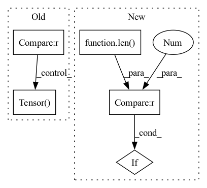

Pattern ID :10141

Before Change
def __call__(self, sample: torch.Tensor) -> torch.Tensor:
prob = np.random.random_sample()
if prob < self.p:
sigma = (self.max - self.min) * np.random.random_sample() + self.min
sample = np.array(sample.squeeze()) // type: ignore
sample = cv2.GaussianBlur(sample, (self.kernel_size, self.kernel_size), sigma)
sample = torch.Tensor(sample).unsqueeze(0)
return sample
After Change
else:
img = self.apply_gaussian_blur(sample=img, kernel_size=self.kernel_size, p=self.p,
min=self.min, max=self.max)
if len(original_shape) == 3:
return img.squeeze(0)
return img
In pattern: SUPERPATTERN
Frequency: 3
Non-data size: 5
Instances
Fragment ID: 35911969
Project Name: microsoft/hi-ml
Commit Name: ef94f7e3f94e10a922b5ede406e41ac0076f0412
Time: 2023-01-24
Author: 61745616+harshita-s@users.noreply.github.com
File Name: hi-ml/src/health_ml/utils/data_augmentations.py
M Class Name: GaussianBlur
N Class Name: GaussianBlur
M Method Name: __call__(2)
N Method Name: __call__(2)
M Parent Class: object
N Parent Class: object
M File Name: hi-ml/src/health_ml/utils/data_augmentations.py
N File Name: hi-ml/src/health_ml/utils/data_augmentations.py
M Start Line: 175
M End Line: 183
N Start Line: 193
N End Line: 210
'>
Before Change
output_stride = 4
for seg_mask, gt_label, half_h, half_w in zip(gt_masks, gt_labels, half_hs, half_ws):
if seg_mask.sum() == 0:
continue
// mass center
upsampled_size = (mask_feat_size[0] * 4, mask_feat_size[1] * 4)
center_h, center_w = ndimage.measurements.center_of_mass(seg_mask)
coord_w = int((center_w / upsampled_size[1]) // (1. / num_grid))
coord_h = int((center_h / upsampled_size[0]) // (1. / num_grid))
// left, top, right, down
top_box = max(0, int(((center_h - half_h) / upsampled_size[0]) // (1. / num_grid)))
down_box = min(num_grid - 1, int(((center_h + half_h) / upsampled_size[0]) // (1. / num_grid)))
left_box = max(0, int(((center_w - half_w) / upsampled_size[1]) // (1. / num_grid)))
right_box = min(num_grid - 1, int(((center_w + half_w) / upsampled_size[1]) // (1. / num_grid)))
top = max(top_box, coord_h-1)
down = min(down_box, coord_h+1)
left = max(coord_w-1, left_box)
right = min(right_box, coord_w+1)
cate_label[top:(down+1), left:(right+1)] = gt_label
seg_mask = mmcv.imrescale(seg_mask, scale=1. / output_stride)
seg_mask = torch.Tensor(seg_mask)
for i in range(top, down+1):
for j in range(left, right+1):
label = int(i * num_grid + j)
After Change
ins_label.append(cur_ins_label)
ins_ind_label[label] = True
grid_order.append(label)
if len(ins_label) == 0:
ins_label = torch.zeros([0, mask_feat_size[0], mask_feat_size[1]], dtype=torch.uint8, device=device)
else:
ins_label = torch.stack(ins_label, 0)
'>
Fragment ID: 35911967
Project Name: wxinlong/solo
Commit Name: 5c6ad798d95005085302f382da8530a221ac3dba
Time: 2020-12-03
Author: wangxinlon@gmail.com
File Name: mmdet/models/anchor_heads/solov2_head.py
M Class Name: SOLOv2Head
N Class Name: SOLOv2Head
M Method Name: solov2_target_single(5)
N Method Name: solov2_target_single(5)
M Parent Class: nn.Module
N Parent Class: nn.Module
M File Name: mmdet/models/anchor_heads/solov2_head.py
N File Name: mmdet/models/anchor_heads/solov2_head.py
M Start Line: 303
M End Line: 336
N Start Line: 293
N End Line: 353
'>
Before Change
output_stride = 4
for seg_mask, gt_label, half_h, half_w in zip(gt_masks, gt_labels, half_hs, half_ws):
if seg_mask.sum() == 0:
continue
// mass center
upsampled_size = (mask_feat_size[0] * 4, mask_feat_size[1] * 4)
center_h, center_w = ndimage.measurements.center_of_mass(seg_mask)
coord_w = int((center_w / upsampled_size[1]) // (1. / num_grid))
coord_h = int((center_h / upsampled_size[0]) // (1. / num_grid))
// left, top, right, down
top_box = max(0, int(((center_h - half_h) / upsampled_size[0]) // (1. / num_grid)))
down_box = min(num_grid - 1, int(((center_h + half_h) / upsampled_size[0]) // (1. / num_grid)))
left_box = max(0, int(((center_w - half_w) / upsampled_size[1]) // (1. / num_grid)))
right_box = min(num_grid - 1, int(((center_w + half_w) / upsampled_size[1]) // (1. / num_grid)))
top = max(top_box, coord_h-1)
down = min(down_box, coord_h+1)
left = max(coord_w-1, left_box)
right = min(right_box, coord_w+1)
cate_label[top:(down+1), left:(right+1)] = gt_label
seg_mask = mmcv.imrescale(seg_mask, scale=1. / output_stride)
seg_mask = torch.Tensor(seg_mask)
for i in range(top, down+1):
for j in range(left, right+1):
label = int(i * num_grid + j)
After Change
ins_label.append(cur_ins_label)
ins_ind_label[label] = True
grid_order.append(label)
if len(ins_label) == 0:
ins_label = torch.zeros([0, mask_feat_size[0], mask_feat_size[1]], dtype=torch.uint8, device=device)
else:
ins_label = torch.stack(ins_label, 0)
'>
Fragment ID: 35911966
Project Name: wxinlong/solo
Commit Name: 5c6ad798d95005085302f382da8530a221ac3dba
Time: 2020-12-03
Author: wangxinlon@gmail.com
File Name: mmdet/models/anchor_heads/solov2_light_head.py
M Class Name: SOLOv2LightHead
N Class Name: SOLOv2LightHead
M Method Name: solov2_target_single(5)
N Method Name: solov2_target_single(5)
M Parent Class: nn.Module
N Parent Class: nn.Module
M File Name: mmdet/models/anchor_heads/solov2_light_head.py
N File Name: mmdet/models/anchor_heads/solov2_light_head.py
M Start Line: 303
M End Line: 336
N Start Line: 293
N End Line: 352